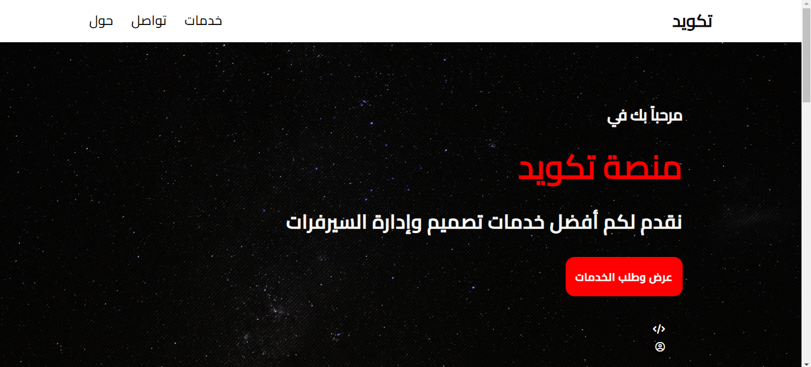
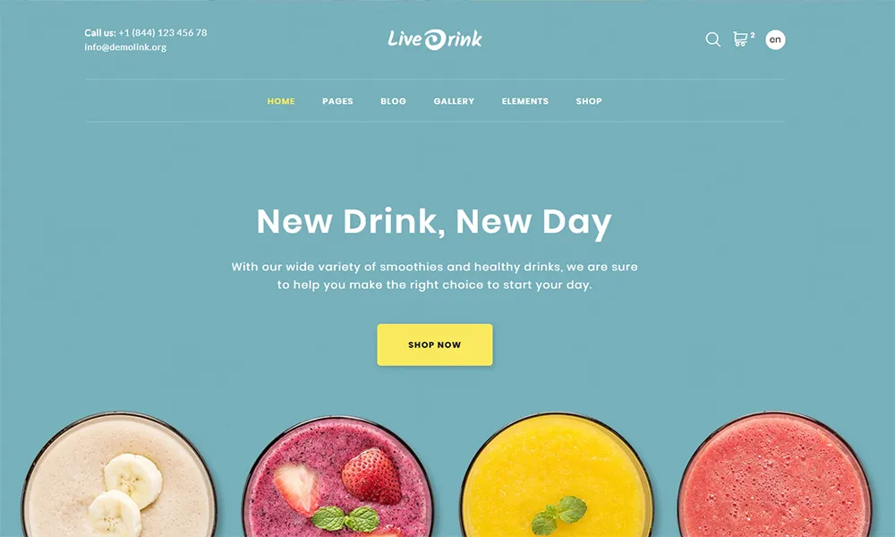

تعريف عن القوالب

ما هو القالب؟
انه عبارة عن صفحة نموذجية صغيرة تحتوي فقرة او مقطعاً من علامات HTML يسهل ادراجه في صفحة نموذجية اخرى او - وهذا هو التحديث المهم - في مادة اي مقال.
وتم توسيع كتابتهما بما يتيح، عدا عن المحاذاة (, )، إمكان تحديد نمط أكثر شمولاً يتناسب إما مع صفحة نموذجية معينة اذا وجدت او مع نمط من ورقة الأنماط (يسترجع القالب modeles/img_classe.html اذا وجد ملفه والا فيستخدم القالب modeles/img.html ولكن مع متغير class="classe").
لكن لا تكتفي القوالب بالتعامل مع الصور والمستندات، فتتيح انشاء مختصرات جديدة من نوع بمجرد إضافة صفحة نموذجية في مجلد modeles/ داخل مجلد الصفحات النموذجية!

له استخدامات متعددة:
- تغيير شكل اختصارات المستندات
- تشغيل صوت بواسطة مشغّل فلاش
- ربط موقع بمقال
- عرض صورة كطابع بريدي
- إنشاء مقال مركّب
أيضاً استخدام ممكن في الصفحات النموذجية:
لا تستخدم القوالب كاختصارات في المقالات فقط. فمن الممكن نداؤها من الصفحة النموذجية باستخدام علامة #MODELE{model} او [(#MODELE{model}{p1=شيء1,p2=شيء2}{p3=الخ}|مرشح...)]. هذا ليس بجديد لأنه يعادل الإدراج (غير الديناميكي) لصفحة نموذجية (وهو الإدراج الذي تطبقه أيضاً علامة #INCLURE).
يأتي SPIP مع القوالب التالية:
imgو docو emb
article_mots وarticle_traductions اللذان يسترجعان تباعاً لائحة المفاتيح المرتبطة بمقال ما وترجمات المقال (الاختصاران: و ويتم أيضاً نداء هذين القالبين من الصفحة النموذجية dist/article.html)
lesauteurs الذي يحدد نتاج علامة #LESAUTEURS ولكن لا يمكن نداؤه كاختصار